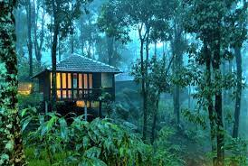
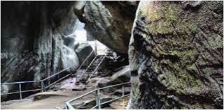
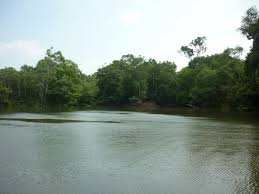

Adorning the northern hills of Kerala is the beautiful district of Wayanad, maintained by the District Tourism Promotion Council, Wayanad. This area is famous for its large amount of camping and trekking trails, breathtaking waterfalls, caves, bird-watching sites, flora, fauna and an overall plethora of magnificent sights. This area has been a tourist favourite over the years. People are especially delighted by the range of exotic products including spices, coffee, tea, bamboo products, honey and herbal plants available here. Kanthanpara Waterfalls is one hotspot in Wayanad that allures tourists from all over the world. Apart from these magnificent falls, Wayanad calls you to experience the stunning beauty of Karapuzha Dam, Pookode & Karlad Lake as well. If you are an adventure seeker, then Cheengari Rock Adventure Center is a must-visit place for you. Another must-visit place in Wayanad is the Edakkal Caves. The caves are two natural rock formations believed to have been formed by a large split in a huge rock. The carvings inside are extremely beautiful.

Famous Tourist Spots:
Edakkal Caves

A trip to Edakkal Caves is like a journey into our forgotten past. Located 10 kms from Sulthan Bathery, they have provided historians with great information regarding the lives and habits of our ancestors. The caves are two natural rock formations believed to have been formed by a large split in a huge rock. The carvings inside are extremely beautiful. A trek up the majestic Ambukuthi Hills is required to reach these caves. The aroma of coffee stays with you the entire way. It is truly a surreal experience as we step into the palms of history.
Kuruva Island

Kuruvadweep or Kuruva Island comprises of a cluster of islets over the middle of Kabini River in Wayanad that is popular for the boat rides it offers on specially crafted bamboo rafts. Spread over 950 acres of land, Kuruva Island, is popular for its diverse flora and fauna. These islands contain two small fresh water lakes. They are also a known safe haven for migratory birds along with hornbills, parrots and many butterfly species.
Nature lovers throng to this remote destination in large numbers. Trekking enthusiasts will find some of the most beautiful and natural trails here. Massive trees situated next to the river are perfect picnic spots. The surrounding streams are ideal for a boat ride or rafting while enjoying the enchanting beauty of the island.